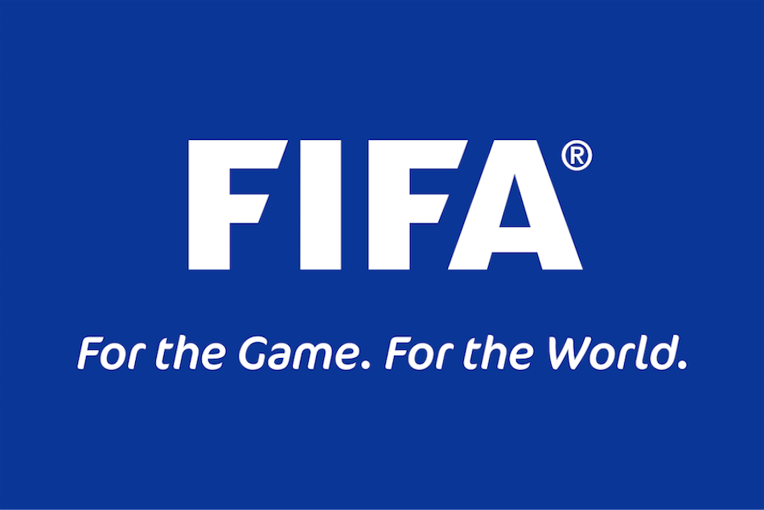
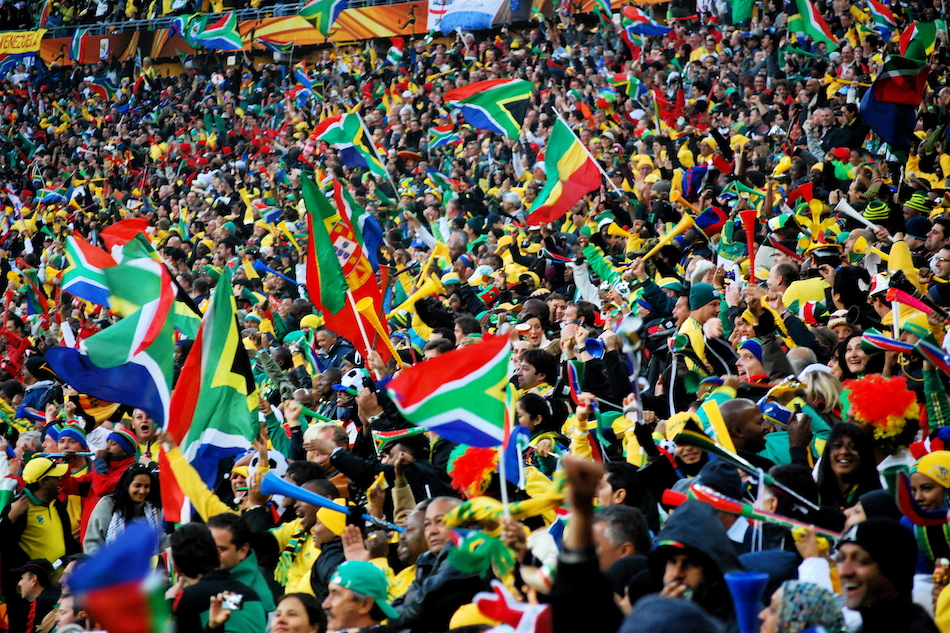
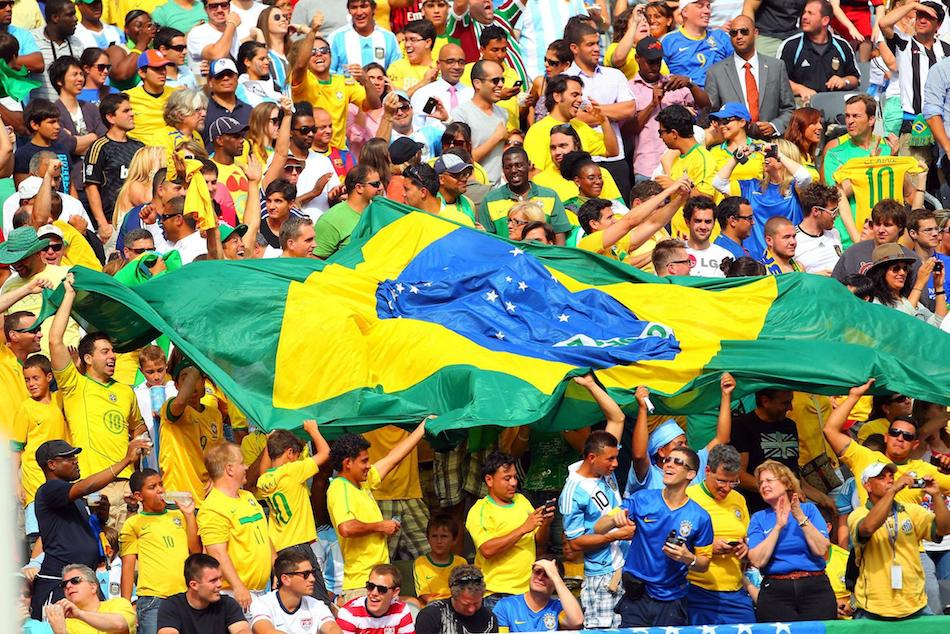
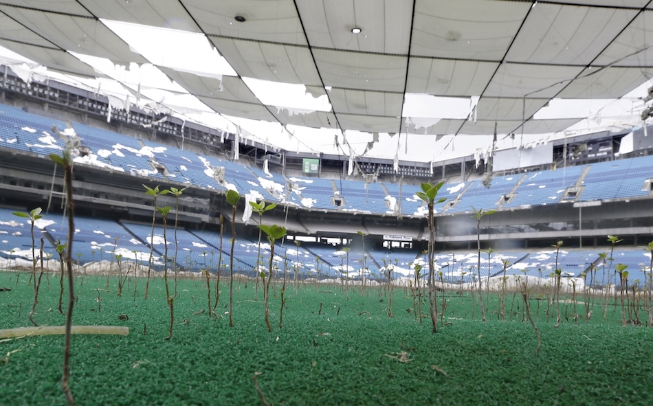
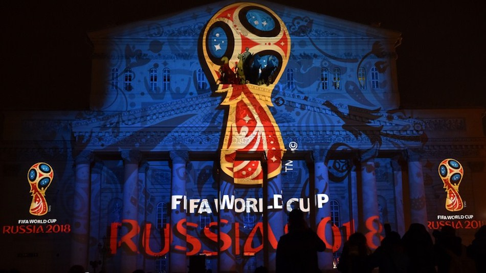
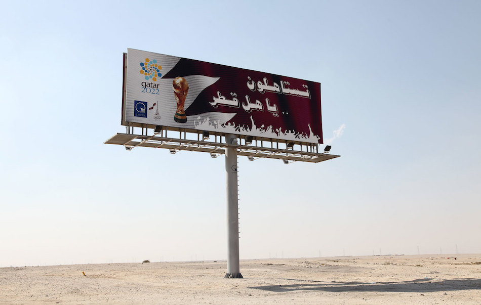
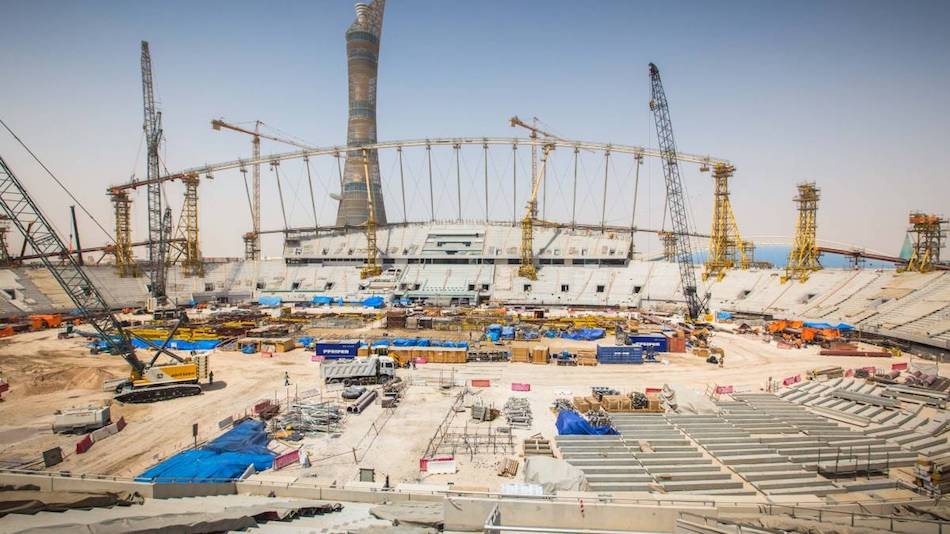
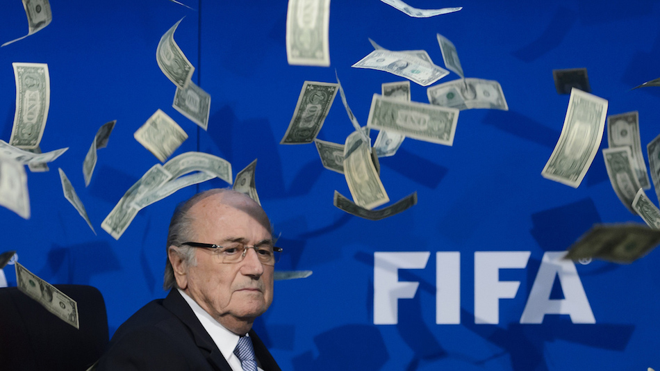

I just posted my first article:
FIFA Turning their World Cup—Into a Cup Half-Empty

FIFA, (Fédération Internationale de Football Association) has been around for as long as I can remember. It brought me marvelous joys growing up, competitions like the World Cup, Euro-Cup, Copa America, competitions that go far beyond the definition of a tournament, that bring communities together, unite a nation, its people, and transmit a sense of underlying support that cannot be denied. Even those not interested by the sport are eager for their country to reach the final and fight till the end. Moreover, they are competitions that cannot be compared to others like the Super Bowl: The FIFA competitions, like the Olympics, only happen once every four years, and that wait makes those 32 (approx.) days, all the more worthwhile.

Unfortunately, as I grew older, FIFA began to bring me nothing but disappointment. Due to the corruption within the organization, I began to foster a grudge towards their competitions and how they are organized.
FIFA corruption increased as time went by, and was first truly significant during the 2010 World Cup in South Africa. FIFA demanded that the South African government provide over 50 courts of law that were to be used as “FIFA Courts.” These courts would ensure that all crimes committed during the World Cup would be dealt with immediately—although, not in accordance with South African laws and legislation, but obeying the 2010 FIFA World Cup South Africa Special Measures Act. This act was created by FIFA in 2006 and was forced upon South Africa in order for them to successfully host the World Cup.
What is most drastic about this legislation is how a violation against it is considered a crime, when in fact, it is actually civil offence. Aside from degrading what constitutes a crime, it breaches the South African rights expressed in their constitution.

Forcing a nation to alter its laws and values is a radical step to take. FIFA went on to take those same drastic steps during for the 2014 World Cup in Brazil. In 2003, Brazil passed a law to ban alcoholic beverages in all stadiums due to the high increase in violence and deaths during matches. Nonetheless, since Budweiser is a long-time sponsor of FIFA and their tournaments, FIFA forced the Brazilian government to uplift the ban and allow beer to be sold at all the stadiums during the competition, triggering several riots around Brazil protesting the absurdity and unfairness of this change, before the cup began. This is when I, along with millions of World Cup fanatics, begin to have our doubts regarding the immaculacy of the organization.
In addition to altering a nation’s laws, FIFA also does not pay for a single cent of the World Cup; that is the duty of the host-nation. Since Brazil was unprepared for such an event, and lacked several stadiums for the matches to take place, the total cost of preparation reached 11 billion, putting Brazil’s economy in even greater debt. This, similarly to the alteration of laws, caused fury among Brazilians.

Some may think that at least Brazil will have those stadiums for years and use them in the future—sadly, that isn’t the case. A considerable amount of the stadiums constructed are in isolated cities that do not even have sports teams that could use them once the world cup reached its end. Thus, these stadiums that cost several millions (one of them being the second most expensive soccer stadium in the world), would only be used for a total of 4 matches. Now, two of these nearly abandoned stadiums are being used as parking lots for buses...

Thankfully, the next World Cup in 2018 will be held in Russia: a nation with sufficient soccer stadiums and facilities to host the competition. The real issue is the 2022 World Cup scheduled to be held in Qatar, a country that is not suited to host the event, not only because of the lack of stadiums and facilities, but because of weather concerns.

The fact that Qatar was the country voted and chosen to host the event was surprising to me, as to everyone, even many within the organization, and it has been proven that the referendum was indeed rigged due to several bribes worth (150 million Euros). These briberies have been countlessly denied by FIFA officials. Yet after ongoing investigations, even some conducted by the FBI, several FIFA representatives have been arrested and lost their positions within the organization: the latest being a Florida businessman who was arrested last Thursday, October 20th. This controversy even led FIFA-president Sepp Blatter to renounce his position last year.
Despite the briberies and rigged election for the 2022 World Cup, Qatar is still in line to host the event: forcing the nation to spend billions on construction and preparation. However, disregarding the cost, so far, due to severe heat and extremely poor working conditions. According to BBC, 1200 construction workers have died, with up to 4000 additional deaths predicted by the 2022 World Cup, being even more dangerous than some sweatshops in Asia. These working conditions must then be enforced by FIFA, this must become a priority.

Not only are workers at risk from the extreme heat in Qatar, but the World Cup will be forced to be held in the “winter time” because athletes are not able to compete and withstand such intense heat during the matches. Therefore, for the first time in history, the World Cup will be held in December, rather than June/July: disrupting all other soccer leagues and competitions that take place over the year, and forcing them to change their schedule. I know I’ll find it strange to be watching during Christmastime. That is, IF I decide to follow it…

It is disturbing that FIFA is putting those who pay the most, between lifetime soccer fans and the sport itself. Their main concerns have become economic and their interests are utterly to make a profit: deplorable behavior for an organization that considers themselves to be “non-profit,” By putting their interests, along with their sponsors’, above anyone else’s, disregard serious issues like laws, poor working conditions, and heat related danger, causing the little-boy inside of me, and every other soccer fanatic, to lose hope for a tournament that we once thought, meant the world...